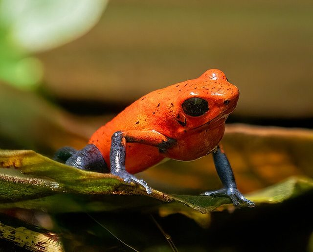

Frog 27 of 30 · page 3 of 3
Strawberry poison dart frog
Oophaga pumilio

A small poison dart frog with many colour forms, with about 15–30 described morphs. It lives in humid lowland and premontane forest.
- Family
- Dendrobatidae
- Genus
- Oophaga
- Conservation status
- Least Concern (IUCN Red List)
- Range
- Eastern Nicaragua through Costa Rica to northwestern Panama.
Facts from the Wikipedia article on Strawberry poison dart frog ↗, retrieved 23 November 2026.